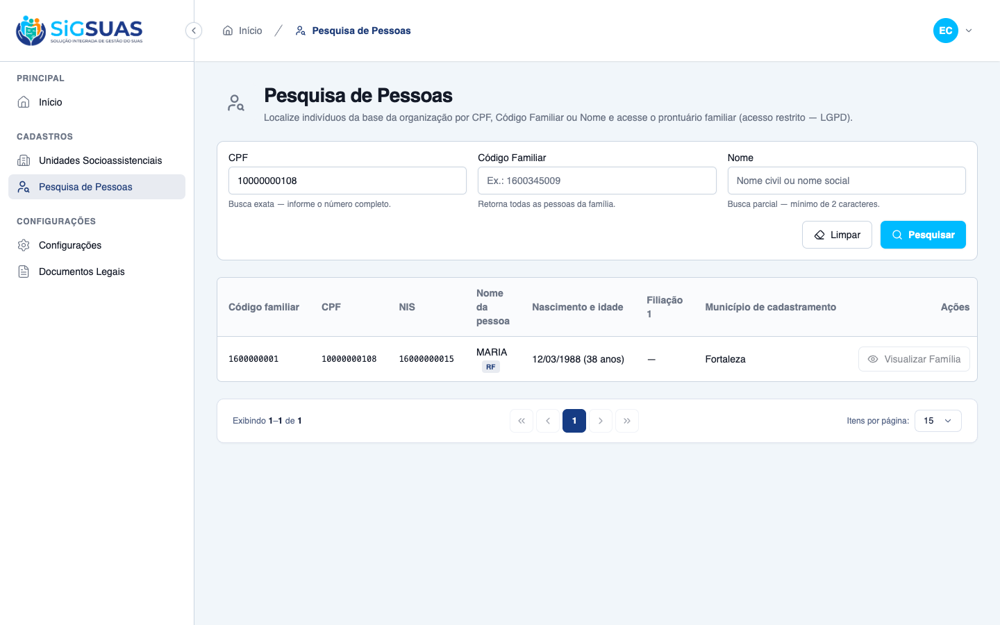
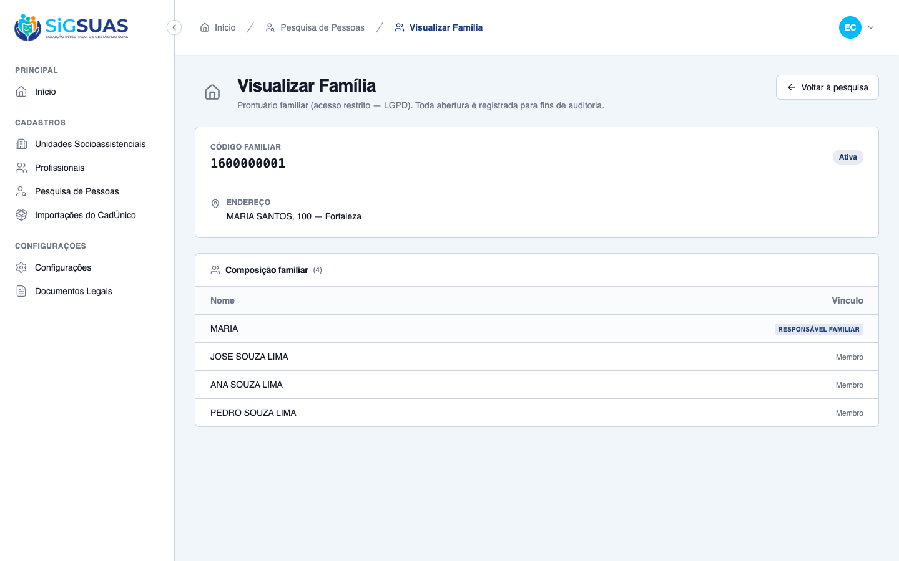
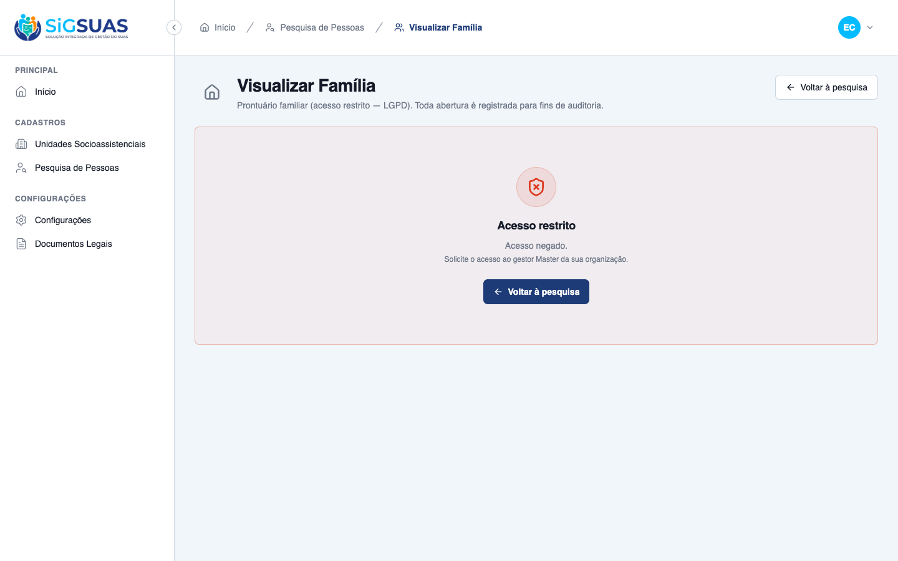

Relatório de Critérios de Aceite — Acesso Restrito ao Prontuário da Família
Resumo
HU #9760: 4 Critérios de Aceite evidenciados — CA05 e CA06 integralmente no navegador (com verificação da auditoria no banco), CA07 no navegador (revogação de papel ao vivo; inativação coberta pela suíte) e CA08 automatizado (404 cross-tenant). Os cenários exercitados aqui também fecham os CAs 06–09 da HU #9759. Fluxo demonstrado ao vivo com duas sessões simultâneas de navegador: operador sem permissão bloqueado (botão desabilitado + 403 in-page), Master abre o prontuário por bypass, auditoria silenciosa gravada (1 registro por abertura, CPF mascarado), concessão do papel habilita o operador no request seguinte e a revogação bloqueia de imediato. Suíte automatizada: 21 testes, 74 assertions, 100% verdes. Resultado geral: todos os critérios atendidos.
| CA | Critério | Status |
|---|---|---|
| CA05 | Bloqueio de ação para operador comum (RN04) — também CA06 da #9759 | ATENDIDO · navegador |
| CA06 | Acesso autorizado + auditoria silenciosa (RN04/RN05) — também CA07/CA08 da #9759 | ATENDIDO · navegador + automatizado |
| CA07 | Revogação imediata por remoção de papel ou inativação (RN06) — também CA09 da #9759 | ATENDIDO · navegador + automatizado |
| CA08 | Isolamento territorial no acesso (RN07) — também CA10 (parte 404) da #9759 | ATENDIDO · automatizado |
CA05 — Bloqueio de ação para operador comum (RN04) — também CA06 da #9759 ATENDIDO · navegador
Critério (Gherkin): Dado que sou Profissional SEM a permissão especial de privacidade E realizei uma busca por nome que listou pessoas Quando a tabela exibe as pessoas localizadas Então o botão de visualização na coluna de Ações aparece desabilitado E não consigo abrir os detalhes da família daquele cidadão E, se eu chamar o endpoint de detalhe diretamente, recebo 403
Como foi testado: Login como Operador E2E (sem o papel LGPD) → Pesquisa de Pessoas → busca por CPF 10000000108. Em seguida, deep-link direto para /app/cadastros/familias/{uuid} (equivale a chamar o endpoint de detalhe).
- Botão "Visualizar Família" visível porém desabilitado, com tooltip: "Acesso restrito (LGPD): requer a permissão 'Visualização de Detalhes da Família'".
- No deep-link direto, o backend responde 403 e a tela exibe o alerta "Acesso restrito" com orientação para solicitar acesso ao Master — nenhum dado da família é exibido.
- Suíte confirma o 403 do endpoint (GET families/{uuid}/details sem permissão) e que a tentativa negada NÃO gera registro de auditoria.


CA06 — Acesso autorizado + auditoria silenciosa (RN04/RN05) — também CA07/CA08 da #9759 ATENDIDO · navegador + automatizado
Critério (Gherkin): Dado que possuo a permissão especial ativa (ou sou Master) Quando clico em "Visualizar" na coluna de Ações de uma pessoa localizada Então sou direcionado à tela cheia "Visualizar Família" daquele núcleo familiar E o sistema grava, em segundo plano, um log de auditoria com meu Usuário único global, o nome do Profissional local, o tenant, a data/hora e o Código Familiar E nenhum aviso de auditoria é exibido a mim
Como foi testado: Login como Master E2E → busca por CPF → clicar em Visualizar Família. Após o carregamento, consulta direta à tabela activity_log no PostgreSQL (saída em auditoria-family-access.txt).
- Master é direcionado à tela cheia "Visualizar Família": código familiar 1600000001, status Ativa, endereço, composição familiar com 4 membros (RF primeiro, nome social precede o civil).
- Registro de auditoria gravado em segundo plano: log_name=family_access, event=record_opened, com tenant_id, family_code, professional_name "E2E Master CadÚnico [Master]", datetime e CPF do usuário global MASCARADO (***.982.247-**).
- Exatamente 1 registro por abertura (verificado no banco: 1 abertura Master + 1 abertura Operador autorizado = 2 registros).
- Nenhum aviso de auditoria exibido ao operador — a página não menciona a gravação além do texto estático de cabeçalho.

CA07 — Revogação imediata por remoção de papel ou inativação (RN06) — também CA09 da #9759 ATENDIDO · navegador + automatizado
Critério (Gherkin): Dado que o Master remove de mim o papel com "families.view-details" Ou me inativa como Profissional do município Quando eu tento abrir um prontuário no request seguinte Então o acesso é bloqueado (botão desabilitado e endpoint 403) E meu Usuário global continua válido em outros tenants
Como foi testado: Com o Operador logado e com o prontuário ABERTO em outra sessão de navegador, o Master desmarca o papel "Visualização de Detalhes da Família — LGPD" no drawer de perfis e salva. O Operador recarrega a página do prontuário (novo request), sem novo login.
- No request seguinte à revogação, o mesmo prontuário que estava aberto responde 403 e a tela mostra o alerta "Acesso restrito" — efeito em tempo real, sem depender de logout.
- Ramo da inativação (Profissional inativado → 403 no próximo request) e a preservação do usuário global em outros tenants são cobertos pela suíte automatizada (cenários CA07/CA-extra-D/CA-extra-E).

CA08 — Isolamento territorial no acesso (RN07) — também CA10 (parte 404) da #9759 ATENDIDO · automatizado
Critério (Gherkin): Dado que estou autenticado no Tenant A Quando tento abrir o prontuário de uma família do Tenant B Então o sistema responde 404 (recurso fora do escopo do tenant)
Como foi testado: Coberto pela suíte automatizada (apêndice): usuário autenticado no Tenant A requisita GET families/{uuid}/details de família do Tenant B.
- Resposta 404 (não 403) para família de outro tenant — o recurso simplesmente não existe no escopo, sem vazar sua existência.
- Guard-rail explícito no controller (binding por uuid resolve antes do middleware de tenant — mesmo padrão dos módulos existentes).
Evidência por cobertura automatizada — ver Anexo.
Anexo — Cobertura automatizada (Pest, --filter=FamilyDetails|FamilyAccess|ClientUserPolicyStackedRoles) — 21 passed, 74 assertions · Auditoria verificada no banco em auditoria-family-access.txt
PASS Tests\Unit\Services\FamilyAccessAuditServiceTest ✓ it writes one family_access/record_opened entry with the RN05 prope… 0.45s ✓ it labels the professional name as "<Nome> [Master]" when the Master has… 0.01s ✓ it prefers the local professional name over the master label when t… 0.02s PASS Tests\Unit\Services\FamilyAccessServiceTest ✓ it detects the master role only in the tenant where it was granted 0.03s ✓ it detects the view-details permission per tenant, via the dedicate… 0.02s ✓ it stops counting a revoked (force-deleted) role as a grant 0.02s ✓ it resolves the active professional and denies inactive/soft-delete… 0.03s PASS Tests\Feature\Api\Client\FamilyDetailsTest ✓ it denies the base operator without the restricted permission (CA05… 0.07s ✓ it grants the operator with the family_viewer role and audits silen… 0.05s ✓ it lets the Master open the record via role bypass, without the res… 0.04s ✓ it blocks immediately when the professional is inactivated, even ke… 0.04s ✓ it blocks on the request right after the role is revoked, keeping t… 0.05s ✓ it returns 404 (not 403) for a family of another tenant (CA08 9760… 0.05s ✓ it does not let a grant in Tenant A open records in Tenant B (CA-ex… 0.05s ✓ it wires the dedicated family_viewer role in the seeder: level 25,… 0.03s ✓ it keeps the restricted permission out of the base roles after perm… 0.89s ✓ it lists family_viewer as assignable by the Master (listAssignable… 0.04s PASS Tests\Feature\Policies\ClientUserPolicyStackedRolesTest ✓ it resolves the SENIOR role (operador, level 30) even when the fami… 0.03s ✓ it resolves the SENIOR role even when the family_viewer add-on is i… 0.02s ✓ it an operador stacked with family_viewer still CANNOT create anoth… 0.03s ✓ it an operador stacked with family_viewer still CANNOT update anoth… 0.03s Tests: 21 passed (74 assertions) Duration: 2.42s